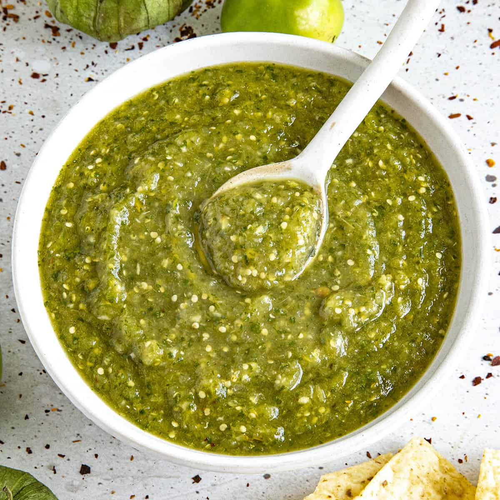

Taco bout this salsa

One of the most important toppings for any type of Mexican food is salsa. A good
salsa can elevate a dish by a myriad points. This delicious concoction is so complex yet
so easy to make. There are so many ways to make a good salsa but for this recipe we will be
making a traditional green salsa.
Ingredients
- Tomatillos
- White onion
- Garlic
- Serrano chiles
- Salt
- Water
Making the perfect salsa verde
- In a medium saucepan, boil water and place in the tomatillos, serrano chiles, and garlic
- Let them cook over medium heat for 12-15 minutes or until the tomatillos and chiles are soft
- Once ready, remove all the ingredients and reserve ½ cup of water from the saucepan
- Place all the cooked ingredients and the onion in a blender and blend until well-combined
- If its too thick add some of the water we set aside until you reach the desired consistency
- Once the salsa is ready season with salt to taste and it is all ready to be served
Now that you have your hands on this delicious salsa, use it on any food you'd like. Anything from tacos al
pastor to a simple plate of chilaquiles and you will be
much more satisfied. Enjoy!